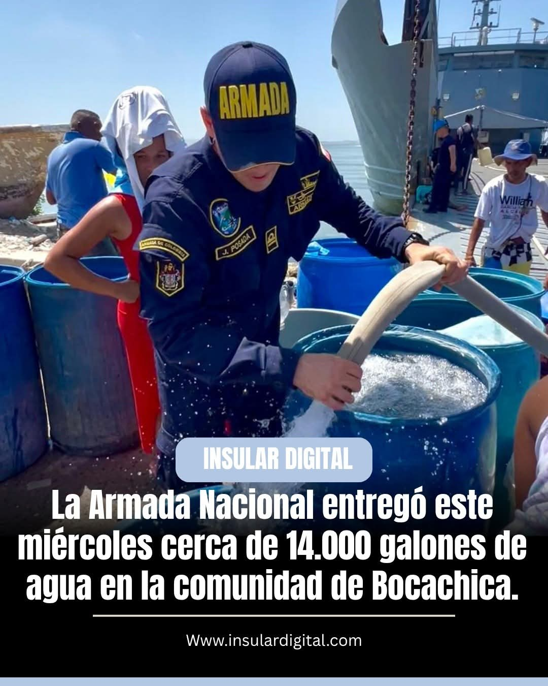
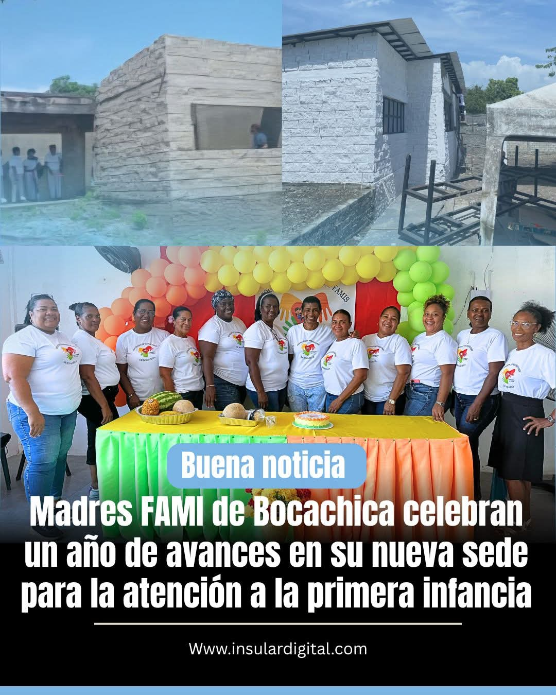
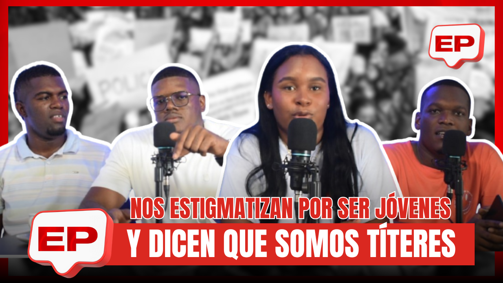
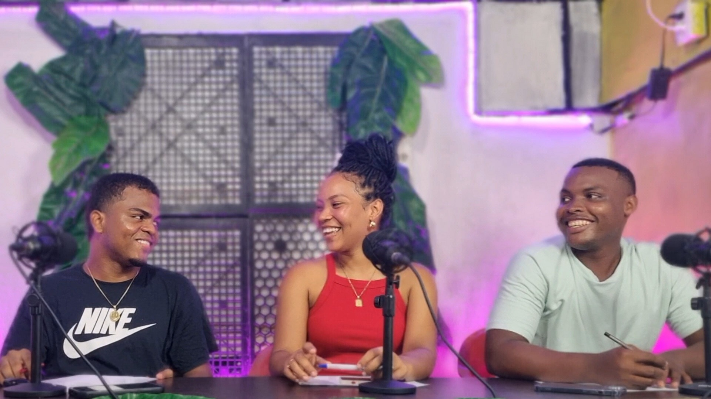

Informe Informativo
Noticias, entrevistas y actualidad de la comunidad insular.

Narramos historias, informamos a nuestras comunidades y visibilizamos procesos que transforman el territorio.
Noticias, entrevistas y actualidad de la comunidad insular.
Cultura, música e identidad desde el territorio.
Programas que informan, inspiran y fortalecen la identidad de nuestras comunidades a través de la comunicación participativa y la producción audiovisual.

Noticias, entrevistas, reportajes y actualidad de interés para las comunidades insulares.
Conocer programa →
Música, cultura, participación ciudadana e identidad desde el territorio.
Ver programa →
Relatos que rescatan la memoria, los saberes y las tradiciones que hacen parte de nuestra identidad.
Ver programa →Historias, coberturas y contenidos audiovisuales que reflejan la identidad, la cultura y los procesos de transformación de nuestras comunidades.








Conectamos empresas, emprendimientos e instituciones con una audiencia comprometida a través de contenidos audiovisuales, programas comunitarios y espacios de comunicación con impacto real en el territorio.
Haz visible tu mensaje en espacios que generan cercanía, confianza y reconocimiento dentro de la comunidad insular.